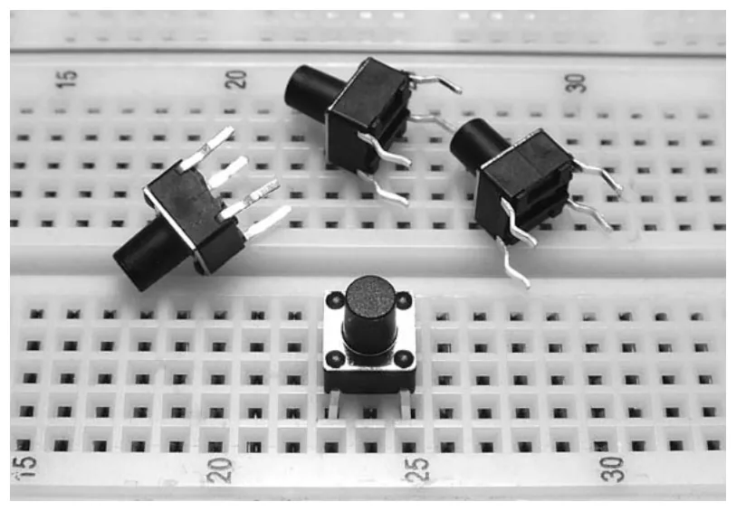
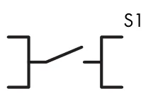

In Chapter 3, we used digital I/O pins as outputs to turn LEDs on and off. We can use these same pins to accept input from users—such as detecting whether a push button has been pressed by a user.
Like digital outputs, digital inputs have two states: high and low. The simplest form of digital input is a push button, like those shown in Figure 4-16. You can insert these directly into your solderless breadboard. A push button allows a voltage or current to pass when the button is pressed, and digital input pins are used to detect the presence of the voltage and to determine whether a button is pressed.

Notice how the button at the bottom of the figure is inserted into the breadboard, bridging rows 23 and 25. When the button is pressed, it connects the two rows. The schematic symbol for this particular push button is shown in Figure 4-17. The symbol represents the two sides of the button, which are numbered with the prefix S. When the button is pressed, the line bridges the two halves and allows voltage or current through.
